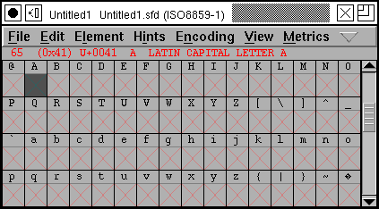
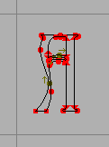

Import Outline Tutorial
- Font Creation
- Creating a glyph (tracing outlines)
- Create glyph outlines using spiro points
- Importing a glyph from Inkscape (or Illustrator, or some other vector editor)
- Navigating to other glyphs
- On to the next glyph (consistent directions)
- Consistent serifs and stem widths
- Building accented glyphs
- Building a ligature
- Lookups and features
- Examining metrics
- Kerning
- Glyph variants
- Anchoring marks
- Conditional features
- Checking your font
- Generating it
- Font Families
- Final Summary
- Bitmap strikes
- Scripting Tutorial
- Notes on various scripts
Importing Outline Glyphs
You may be more comfortable designing your glyph outlines in some other vector design program (Illustrator, FreeHand, Inkscape, what-have-you) and then importing it into FontForge.
The last two sections have talked about importing bitmap images and tracing around them. This is slightly different.
So design your glyph in your favorite program, and then export it from that program into either eps (Encapsulated PostScript) or svg (Scalable Vector Graphics). If you use Illustrator or FreeHand you should probably chose "eps" if you use Inkscape you probably want to use "svg".
Then in FontForge, open the glyph slot where you want to add the glyph you just designed (by double clicking on it), and within that window select File->Import.
 This will bring up the import dialog, initially it
displays all bitmap images. Change the Format to EPS or SVG
(depending on which you used). Then find the glyph you just
created and import it.
This will bring up the import dialog, initially it
displays all bitmap images. Change the Format to EPS or SVG
(depending on which you used). Then find the glyph you just
created and import it.
You should now have the outlines of a glyph in the fontforge
editing window.
But it may be the wrong size. It may be at the wrong place.
The example at right is both in the wrong place (the bottom part of the A should be aligned with the baseline -- the grey line near the bottom of the image, and the left side bearing is too large for the image). Use Edit->Select->Select All to select all the points in the image, depress the mouse on one of those points, and drag the entire image down to the base line, and perhaps over to the left a little too.
The example is also too small. Make sure that all points are still selected and then invoke Element->Transform->Transform. Select Scale Uniformly from one of the pulldown lists in the Transform dialog, and enter 140% or so.
Obvious this is rather hit or miss. If you design your glyphs in a uniform way in the program you chose you will be able to use a uniform scale factor for all of them.
In Inkscape the following approach will simplify the process:
- Open Inkscape
- From the File menu, select Document Properties.
- Set units to pixels (px) and document dimensions to 1000
x 1000, click OK
Or if your font has a different number of units per em use that, but 1000 is fontforge's default) - Set a horizontal guide at 200px
Use this as your baseline. - Draw a glyph - the hardest part! :-)
- Save the drawing as an SVG file
- Open FontForge
- From the File menu, select Import, chose SVG, find your drawing, click OK
- From the Element menu select Transform, set the Y value to -200, click OK